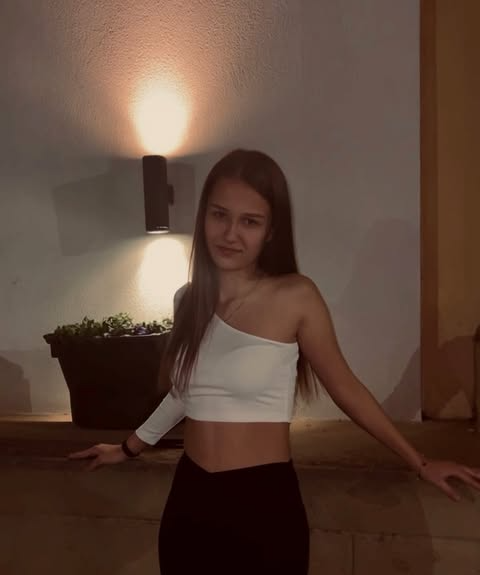

За мен

Моята история
Запознах се с програмирането още в гимназията, когато случайно попаднах на онлайн курс по Python. От тогава страстта ми към технологиите само расте. След завършване на средното си образование, реших да продължа да се развивам в тази посока и се записах в университета, където изучавам компютърни науки.
Освен програмирането, обичам да чета, да рисувам цифрово изкуство и да пътувам. Вярвам, че разнообразните интереси допринасят за по-креативно мислене и подхождане към проблемите.
Моите интереси и хобита
- Програмиране и разработка на софтуер
- Цифрово изкуство и дизайн
- Четене на научна фантастика
- Фотография
- Пътувания и откриване на нови култури
- Готвене и експериментиране с нови рецепти